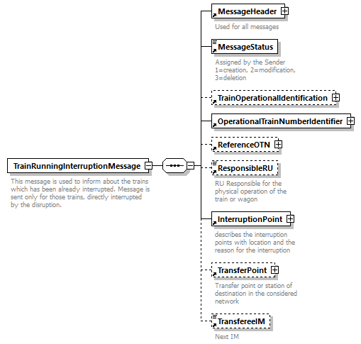

| diagram |  | ||
| namespace | http://taf-jsg.info/schemes | ||
| properties |
|
||
| children | MessageHeader MessageStatus TrainOperationalIdentification OperationalTrainNumberIdentifier ReferenceOTN ResponsibleRU InterruptionPoint TransferPoint TransfereeIM | ||
| annotation |
|
||
| source | <xs:element name="TrainRunningInterruptionMessage"> <xs:annotation> <xs:documentation>This message is used to inform about the trains which has been already interrupted. Message is sent only for those trains, directly interrupted by the disruption. </xs:documentation> </xs:annotation> <xs:complexType> <xs:sequence> <xs:element ref="MessageHeader"/> <xs:element ref="MessageStatus"/> <xs:element ref="TrainOperationalIdentification" minOccurs="0"/> <xs:element ref="OperationalTrainNumberIdentifier"/> <xs:element ref="ReferenceOTN" minOccurs="0"/> <xs:element ref="ResponsibleRU" minOccurs="0"/> <xs:element ref="InterruptionPoint"/> <xs:element ref="TransferPoint" minOccurs="0"/> <xs:element ref="TransfereeIM" minOccurs="0"/> </xs:sequence> </xs:complexType> </xs:element> |